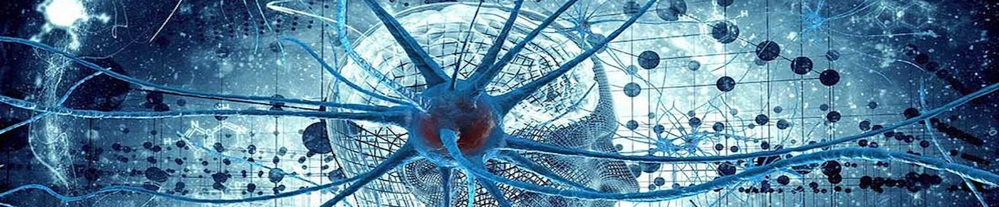

2022 Conference Schedule
The topics covered in this mini-conference are:
- Reincarnation & Embryogenesis
- The concept of Subtle-body
- Developing a theory of matter, mind and consciousness
- Prioritizing projects defined at the Mind-Brain Interface conference
- Outreach at top-tier universities
- Developing research collaborations between various universities
The virtual conference will be held on 27-28 August 2022, and will start at (0530 PDT = 0730 CDT = 0830
EDT = 1330 UK = 1800 IST = 2030 AWST) on both days.
Add
to Google Calendar
Day 1: Saturday (27th August) 8:30AM-1:30PM EDT:
-
Introduction Session (45 minutes round
table) (Chair Tomas Chapa) [8:30AM-9:15AM EDT]
- Goal: Get to know everyone and their interests
-
New initiatives at IIT Mandi (20+10 minutes) [9:15AM-9:45AM EDT]
- Prof. Laxmidhar Behera (Director, IIT Mandi)
-
Reincarnation and Embryogenesis (10+2 minute talks followed by 30 min discussion = 2
hours)
(Chair Prem Kishor) [9:45AM-11:45AM EDT]
- Dr. Kunal Mooley (Caltech) — Reincarnation overview
- Prof. Nitika Parmar (CSUCI) — Relevant topics from
Embryogenesis
- Dr. Swati Kulkarni — Reincarnation and Embryogenesis in Ayurveda
- Dr. Ashish Gupta (IITK) — A reincarnation-type case within ISKCON
- Prem Kishor Das (ISS) — India case studies plan
- Dr. Neha Satam (ISS, Inspire) — Hypnotic regression
- Dr. Mayank Bhasin (IITKgp/U Melbourne) — Machine learning approaches on the DOPS
reincarnation
database
- Jack Dodson (Temple U.) — Towards a theory for reincarnation
- Discussion: Timeline and resources. Collaborations with Dr. Pasricha and Dr.
Tucker.
Planning a workshop at IIT Mandi in early 2023.
- Outreach (10+2 minute talks followed by 30 minute discussion = 1.5 hours) (Chair
Akhandadhi Das) [12:00PM-1:30PM EDT]
- Radheshyam Das (VOICE/NVCC Pune) — BYS concept at US universities
- Dr. Kunal Mooley (Caltech) — The need for mind & consciousness resources (books,
handouts,
presentations, projects)
- Akhandadhi Das (SPi/BIHS) — Atma Paradigm / Consciousness-based resources
- Prem Kishor Das (ISS) — ISS outreach model and IKS accreditation
- Dr. Mayank Bhasin (IITKgp/U Melbourne) — Engaging university students with virtual
science-philosophy-based programs
- Discussion: Mind and Consciousness as common ground between modern science and
Gaudiya
Vaishnava philosophy. Generating resources for outreach at top-tier universities.
Requirement and timeline.
- Day 1 Wrap up (10 minutes)
- Summary of important points (Kunal)
Day 2: Sunday (28th August) 8:30AM-1:30PM EDT:
- Theory and Subtle body (10+2 minute talks followed by 30 min discussion = 2.75 hours)
(Chair
Kunal) [8:30AM-11:15AM EDT]
- Prof. Bhupal Dev (UWStl) — Building blocks of the Physical Universe
- Akhandadhi Das (SPi/BIHS) — Theory emerging from the Atma Paradigm (15+5 min)
- Dr. Jyotiranjan Beuria (IIT Mandi, ISS) — Semantic Space to address the
Mind-Body
conundrum
- Dr. Venkatesh Chembrolu (Amazon Labs) — Concept Space
- Jack Dodson (Temple U.) — A mathematical approach for the genesis of Sankhya
elements
- Dr. Douglas Watson (BIHS) — Akash and subtle information
- Dr. Guruprasad Raghavan (Caltech) — Neural correlates of perception
- Dr. Murli Gopal Das (UF) — Subtle body descriptions in the Eastern texts
- Prof. Edwin Bryant (Rutgers) — Metaphysical logic of Yogic
Siddhis
- Dr. Stuart Hameroff (U. Arizona) — Quantum mind-brain connection (15+5 min)
- Discussion: Plan of action to make progress on these projects. Timeline and
resources.
Collaborations necessary. Planning for a dedicated workshop in the near future.
-
Other top-rated projects (Overview talk by Kunal/Tomas 15 minutes + 15 minute discussion
= 30
min) [11:30AM-12:00PM EDT]
- Anesthesia & Vegetative State, Phantom Limb, Placebo Effect, Meditation &
Wellbeing,
Remote Viewing.
- Discussion: Reality check on the projects that can be pursued. Prioritization.
Required
resources and timeline.
-
Funding, crowdsourcing and collaborations between universities (Chair Tomas Chapa) (1.5
hour
discussion) [12:00PM-1:30PM EDT]
- BIHS plans, ISS plans, IIT Mandi plans, Grant proposals (Templeton, NSF etc),
Donations
- Possible plan for workforce:
- IIT Mandi academic program
- Students connected with
ISS (volunteer/salaried)
- Crowdsourcing (volunteer/salaried)
- Working group
members (volunteers)
- Closer collaboration between universities as well as ISS and BI-Neuro
- Recruitment drives at universities worldwide
- Day 2 Wrap up (10 minutes)
- Summary of important points and action items (Kunal)